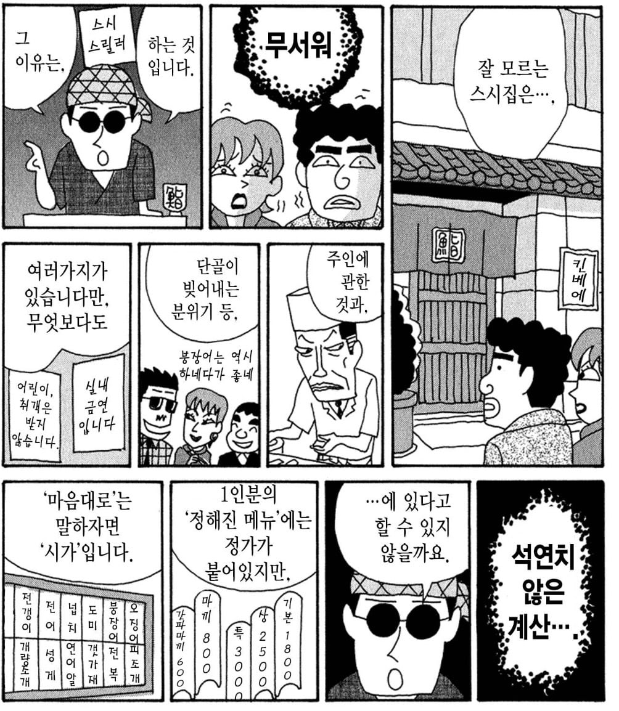

싯가

싯가
딱 정해진 세트 있으면 너무너무 편함
싯가 무서움 ㅠㅠㅠㅠ
싯가라도 가격 적어놓는게 손님에대한 예의고 정성이지 시장좌판도아니고
싯가 메뉴의 의미가 그날그날 시장에서 물건 받아오기 때문에 가격이 얼마일지 우리도 몰라요 라는 의미인걸 보면 시장좌판이 맞따 ㅋㅋㅋ
그날 사왔으면 가격 업데이트좀 하라고!
+오토시
제대로된 가게 가면 오토시는 그래도 가격 받는만큼 제대로 된거 나옴
여행객 입장에서 가면 80% 매장은 오토시 실망함
그냥 먹을만한데 자릿세라는 느낌을 더 강하게 받음
근데 단골되고 친해지면 오토시도 훨씬 더 잘나오는건 있음 신메뉴 테스트이라면서 종종 여러가지 챙겨주는것도 있고
저 싯가라는게 일본에선
단골이면 단골일수록 친할수록
재미있는 계산법이 적용됨
일본에서 지낼때 거의 일주일에 두세번 가던 할배가 하는 50년된 초밥집 있는데
메뉴판에 일인분 오마카세 세트 가격만 있고 먹고싶은거는
그날그날 걍 생선 들여오는거 따라 추가로 주문해서 먹는곳
3000-5000엔 정도에 12-15피스 줌
맥주도 병맥만 파는 클래식 가게 한병에 500엔
보통 맥주 두병에 세트 하나씩 매번 먹고
추가로 10개이상씩 시켜먹다보니
1만엔은 나와야 하는데
걍 자주가면서 친해지니 7천엔에 맨날 먹는 어느정도 양 되는건
고정됨
뭘 처먹던 비싸게 안받으심
추가로 우니를 먹던 대뱃살을 먹던 연어알을 먹던
걍 재료털이 느낌으로 비싼것들 먹어도 싸게줌
댓지
제주도 싯가 돔, 싯가 대광어랑 같구만ㅋ
자연산 수산물이라는게 아무래도 경매라던가 어획량 따라 가격이 매일매일 변동이 심하니까
진짜 생선값이 돈벌기 쉬움
사온값에 2배는 껌인데
부위별로 조금씩 팔면 8배도 됨ㅋㅋ
사람사는대 다 같구먼 ㅋㅋㅋㅋㅋ